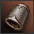
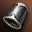
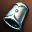
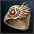

Olimpiadas
Talismanes
Los talismanes son unos ítems adicionales que podemos utilizar para optimizar nuestro personaje, tenemos dos tipos, los activos, que tienen un CD fijó (algunos reinician al entrar en olys) y los pasivos, que nos darán constantemente una estadística.
Normalmente son utilizados en olimpiadas, pero se pueden usar en cualquier situación.
Para poder usarlos, tendremos que tener brazaletes, que nos habilitan la utilización de los mismos hasta un máximo de 6
| Slots | Se compra en: | Costo: | |
|---|---|---|---|
|  Iron Bracelet (C) | *Habilita 1 slot de talisman | Jewelry Shop | 216000 adena |
| Pailaka Bracelet (B) | *Habilita 2 slot de talisman | Pailaka Quest (Giran 63-67) | - |
|  Steel Bracelet (A) | *Habilita 3 slot de talisman | Castle/Fortress shop | 1144 Knight's Epaulette |
|  Mithril Bracelet (S) | *Habilita 4 slot de talisman | Castle/Fortress shop | 3556 Knight's Epaulette |
|  Orichalcum Bracelet (S) | *Habilita 6 slot de talisman | GM shop | Undergames |
Los talismanes tienen una cantidad de mana, que se va descargando con costo de uso, costo de equiparse y costo al tenerlo equipado.
Cada talismán tiene consumo de MP distinto, en este ejemplo tiene un total de 74 de mana y un costo de 15, lo que significa que al usarlo quedará en 59, y si el talismán tiene menos de 15, no podrá usarse.
Al equiparnos el talismán el mismo perderá 1 puntos de maná.
Al tener equipado el talismán, perderá pasivamente 1 punto de maná por cada minuto equipado.
Los talismanes activos proporcionan un buff por cierta duración, si se utiliza otro activo que proporcione buff, pisará el anterior
Talismanes de uso más frecuente
| Nombre | Utilidad |
|---|---|
 Active Talisman - Divine Protection Active Talisman - Divine Protection
 Active Talisman - Lord's Divine Protection Active Talisman - Lord's Divine Protection
|
Nuestra herramienta para defendernos de esas clases que van a destruirnos con su burst, el uso correcto de estos talismanes en el momento apropiado define las peleas. |
 Active Talisman - Life Force Active Talisman - Life Force
|
El Santo Grial de nuestros talismanes, en peleas que definen el hero es obligatorio tenerlo como opción. |
 Passive Talisman - Speed Passive Talisman - Speed
 Active Talisman - Berseker Active Talisman - Berseker
 Passive Talisman - Speed Passive Talisman - Speed
|
La velocidad es una de las estadísticas más importantes en las olimpiadas en H5, con la implementación de estatuas, columnas y elementos para esconderse, muchas peleas se definen por quien logra escapar del otro. |
 Passive Talisman - Arcane Defense Passive Talisman - Arcane Defense
 Active Talisman - Magic Defense Active Talisman - Magic Defense
 Active Talisman - Maximum Clarity Active Talisman - Maximum Clarity
|
El Maximum Clarity y los talismanes de defensa son nuestra mejor herramienta contra clases que queman mana, la defensa mágica reduce la cantidad de maná que nos queman. |
 Active Talisman - Wild Magic
Active Talisman - Berseker Active Talisman - Wild Magic
Active Talisman - Berseker
 Active Talisman - Warrior Instinct Active Talisman - Warrior Instinct
 Active Talisman - Magic Instinct Active Talisman - Magic Instinct
|
Si tienes confianza y estás cómodo con tu personaje, las clases con mucho daño es importante potenciarlo, ya que puede hacer que la pelea dure mucho menos con un burst sorpresa. |
 Passive Talisman - Bravery Passive Talisman - Bravery
 Passive Talisman - Motion Passive Talisman - Motion
 Passive Talisman - Grounding Passive Talisman - Grounding
|
Los talismanes que nos dan resistencia a debuffs específicos, no solo reducen la chance que entren, si no que reduce su duración, así que son importantes contra ciertas clases. |
 Passive Talisman - Protection Passive Talisman - Protection
|
Hay distintos factores que afectan al cancel, pero nunca está de más tenerlo contra contrincantes que basen su juego en cancelarte. |
 Active Talisman - Territory Defender Active Talisman - Territory Defender
 Active Talisman - Territory Guard Active Talisman - Territory Guard
 Active Talisman - Territory Royal Guard Active Talisman - Territory Royal Guard
|
El CP es el recurso que más lento se cura de nuestro personaje, usar estos talismanes para curarlo todo, en peleas largas, puede hacer diferencia. |
 Active Talisman - Reflection Active Talisman - Reflection
|
Para peleas contra tanques o si buscas juntar todo el reflect damage posible, este 10% es clave. |
 Active Talisman - Buff Cancel Active Talisman - Buff Cancel
 Active Talisman - Buff Steal Active Talisman - Buff Steal
|
Para enemigos petrificados, tanto por medusa de BD o agument, son la mejor opción para tener a mano. También pueden utilizarse para cuando el tanque enemigo está tratando de activarse la semilla en frente nuestro. |
 Active Talisman - True Freedom Active Talisman - True Freedom
|
Obligatorio usarlo contra SWS, nadie quiere verte corriendo 5 minutos de ellos. |
 Passive Talisman - Healing Passive Talisman - Healing
 Active Talisman - Healing Active Talisman - Healing
|
Estos dos talismanes combinado con el agument de prayer, proporcionan un sustain increíble para clases que solamente tienen el heal lvl3 (Magos en general) |
 Active Talisman - Greater Healing Active Talisman - Greater Healing
|
Una buena opción para potenciar el agument de heal o no tener otra herramienta para evitar el burst. |
Todos los Talismanes
| Nombre | Costo | Utilidad | |
|---|---|---|---|
 |
Passive Talisman - Power | 1/min | *P.atak +20.8 |
 |
Passive Talisman - Violent Haste | 1/min | *Atk.Spd +10 |
|
Passive Talisman - Arcane Defense | 1/min | *M.def +26.4 |
 |
Passive Talisman - Arcane Power | 1/min | *M.atk +24.3 |
| Alta paja, despues subo el resto xD | 1/min | * |